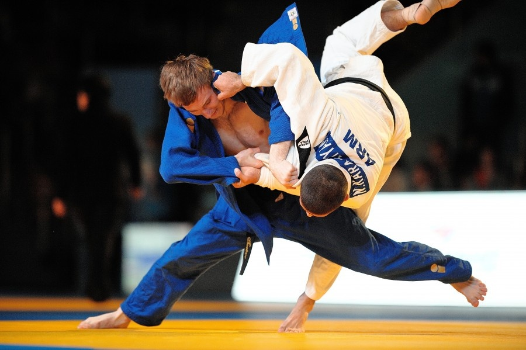

Дзюдо — японское боевое искусство, философия и спортивное единоборство без оружия, созданное в конце XIX века на основе дзюдзюцу японским мастером боевых искусств Дзигоро Кано, который также сформулировал основные правила и принципы тренировок и проведения состязаний.

История дзюдо.
По принятой в Японии классификации, дзюдо относится к современным боевым искусствам. Борьба дзюдо была создана профессором Дзигоро Кано. В 1882 году Кано открыл в Токио первую школу дзюдо «Кодокан». Через год им была создана система разрядов, а в 1887 году была окончательно сформирована техника дзюдо. Первый чемпионат мирового уровня прошел в Токио 1956 году, после чего соревнования такого масштаба стали проводится регулярно и не только в Японии. На протяжении долгих лет в дзюдо не существовало весовых категорий. Как считали сами японцы, главное – это не сила, а искусство владения тайной техникой. Но после поражения японцев на четвертом чемпионате мира правила были изменены и появились весовые категории. Начиная с 1964 году дзюдо, было внесено в программу Олимпийских игр.
Принципы дзюдо.
Дзюдо базируется на трёх главных принципах: взаимная помощь и понимание для достижения большего прогресса, наилучшее использование тела и духа, и поддаться, чтобы победить.
Техника дзюдо.
Три главных технических раздела дзюдо стиля Кодокан составляют: ката («форма», набор формальных упражнений, ката в дзюдо выполняются в парах), рандори («свободные захваты», борьба по предварительно заданным правилам с целью обучения каким-либо техническим приёмам), сиай («соревнования»). Также в программу обучения Кодокан дзюдо входят кихон («основы», этот раздел включает обучение базовым стойкам (сисэй), перемещениям (синтай и тайсабаки), самостраховке (укэми), а также кумиката — способам взятия захвата) и каппо — техника реанимации. Первоначально дзюдо включало в себя приёмы различных школ (рю) дзюдзюцу, отобранные Дзигоро Кано по принципу наибольшей эффективности, но в то же время наименее опасные при применении в соревнованиях. Первый утверждённый перечень приёмов Кодокан дзюдо (1895 год) содержал 40 бросков, объединённых в пять групп и выполняемых преимущественно из стойки. По состоянию на февраль 2010 года технический арсенал дзюдо включает следующие разделы: нагэ вадза (техника бросков), катамэ вадза (техника обездвиживания) включающая удержания (осаэкоми вадза), болевые (кансэцу вадза) и удушающие (симэ вадза) приёмы и атэми вадза (техника нанесения ударов по уязвимым точкам). Кодокан дзюдо имеет в своём арсенале 67 приёмов нагэ вадза и 29 приёмов катамэ вадза. На их основе строится практически неограниченное количество вариативных техник (хэнка вадза).
Экипировка.
Форма для занятия дзюдо называется – дзюдога и состоит из трех частей: куртка, штаны и пояс. Обычно дзюдога изготавливается из хлопка и должна быть синего цвета у спортсмена, вызванного первым, и белого цвета у второго спортсмена.